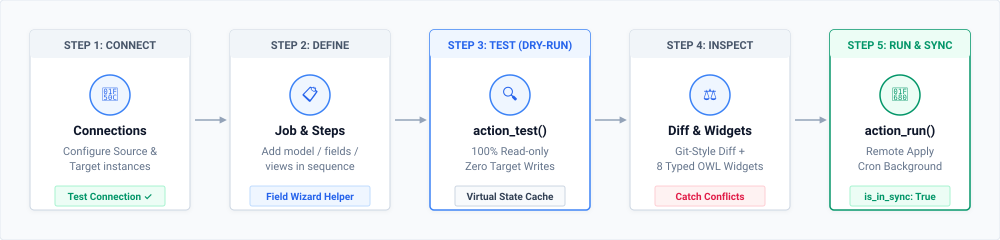
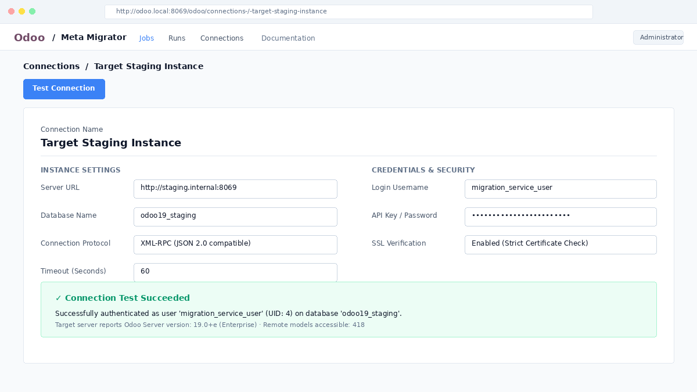
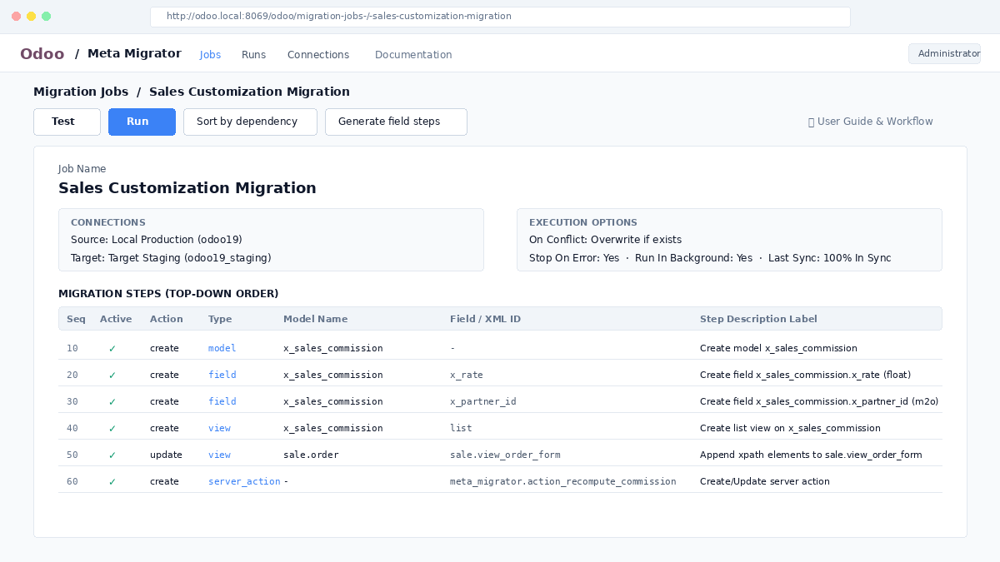
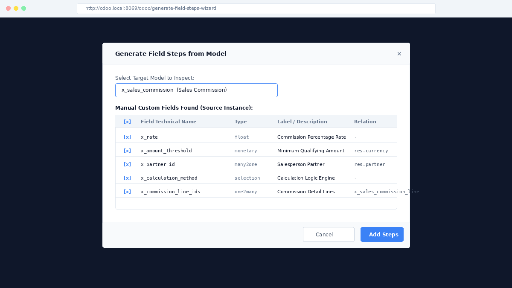
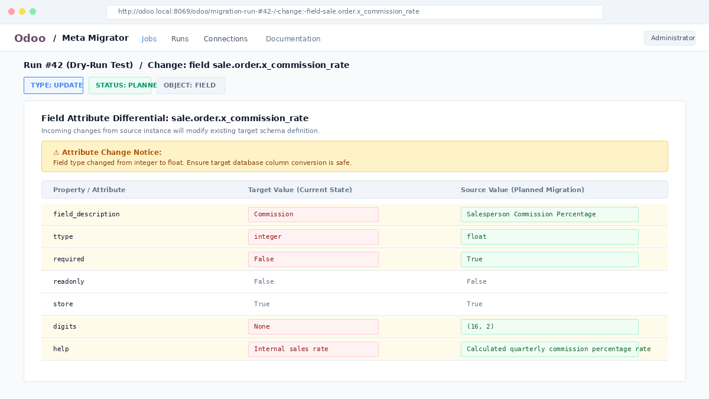
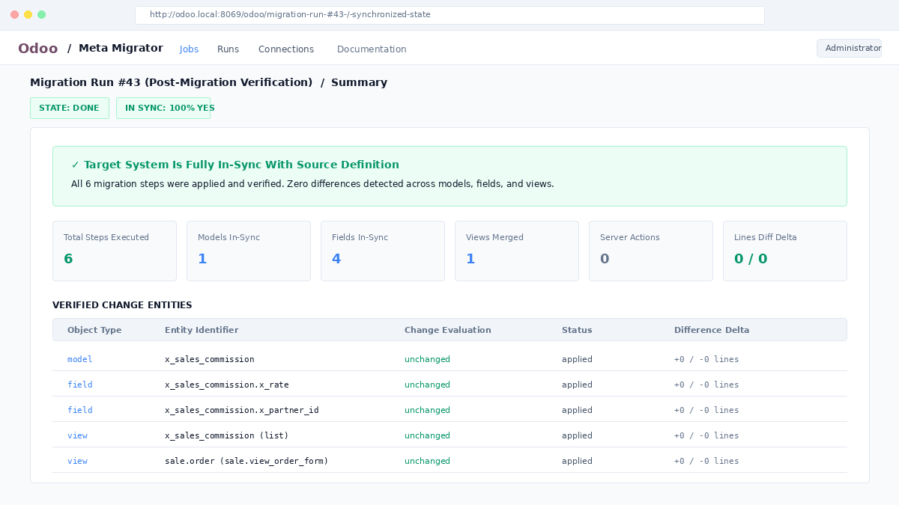

Step-by-step batch migration engine for models, fields, views, menus, security rules, and server actions across separate Odoo instances via remote XML-RPC. Built with top-down sequential execution, zero-write dry-run testing, and specialized OWL 2 diff widgets.
The lifecycle of a migration job flows through five discrete phases, from endpoint authentication to verified synchronization:

Migrate in explicit sequential steps controlled by drag-and-drop handles. No rigid hard-coded order; customize step dependencies as needed.
The Test button runs a read-only comparison across instances using a virtual registry. Target databases remain 100% untouched.
Tailored OWL 2 viewers for models, fields, views, actions, and security records. Features inline word diffs, XML outlines, and risk banners.
Contiguous field steps are collapsed into an atomic block executing across 3 passes, eliminating circular M2O, O2M, and compute dependency deadlocks.
When updating existing views, elements are appended into <data> without wiping target customizations.
Clicking Test after a migration automatically computes is_in_sync, confirming complete parity with zero line deltas.
Declare the source and target Odoo instances under Meta Migrator > Connections:
| Field Label | Technical Key | Description & Best Practices |
|---|---|---|
| Server URL | url |
Base HTTP/HTTPS URL of the remote instance (e.g. https://staging.internal:8069). |
| Database Name | db |
PostgreSQL database name of the target Odoo environment. |
| Login Username | username |
Administrative Odoo user login with system management privileges. |
| API Key / Password | password |
Remote password or Odoo User API Key (strongly recommended for security). |
| Timeout | timeout |
RPC socket timeout in seconds (default: 60s). |
Click Test Connection to verify credentials. A green alert box will confirm successful authentication with user ID and accessible model counts.

Under Meta Migrator > Jobs, create a new job to establish a reusable migration blueprint.
overwrite (Update if target entity exists) or skip (Preserve target entity as-is).ir.cron queue for large transfers.| Object Type | Action | Inputs | Execution Logic |
|---|---|---|---|
model |
create |
model_name, target_model_name |
Creates custom model. If it already exists, marked as unchanged. |
field |
create |
model_name, field_name |
Transfers fields with full attributes (relations, selections, compute logic). |
view |
create |
model_name, view_type |
Creates primary view matching source active view of lowest priority. |
view |
update |
xml_id |
Appends new XML nodes into existing target view <data> without overwriting customizations. |
server_action |
create / update |
xml_id |
Synchronizes Python code, model bindings, and security action states. |
menu |
create |
model_name |
Transfers window actions, root menus, and sub-menu hierarchies. |
access_right |
create |
model_name |
Replicates ir.model.access CRUD permissions, auto-mapping security groups. |
record_rule |
create |
model_name |
Transfers domain force record rules and evaluation contexts. |

Click Generate field steps in the job header. Pick any model from the source instance: the wizard automatically discovers all manual custom fields and presents an interactive checklist. Select the desired fields and click Add Steps to append them to the job in 1 click!
Click Sort by dependency to automatically arrange models before fields and parents before children.

Click the Test button to perform an automated dry-run. Meta Migrator evaluates differences against the target server in pure read-only mode, generating granular change records viewable in the Runs tab.
meta_model_create (child fields table with search/filters), meta_field_update (property diff table with risk warnings),
meta_view_update (element card additions), meta_server_action (code comparison), and more.

Once diffs are audited, click Run in the job header. Confirm the safety dialog to execute the sequence against the target instance via XML-RPC.
is_in_sync: True with +0 / -0 diff delta!
